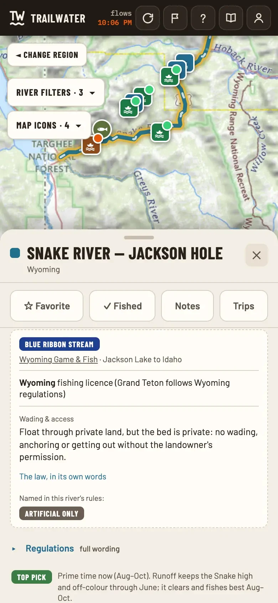
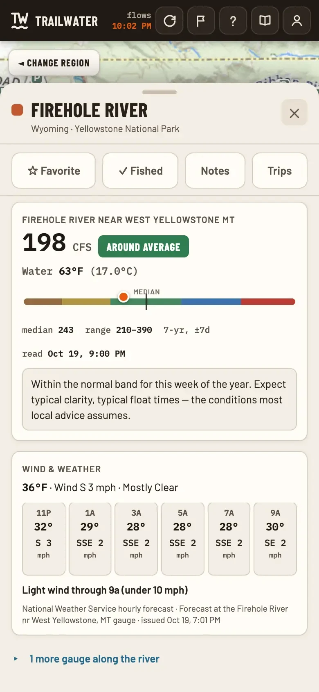
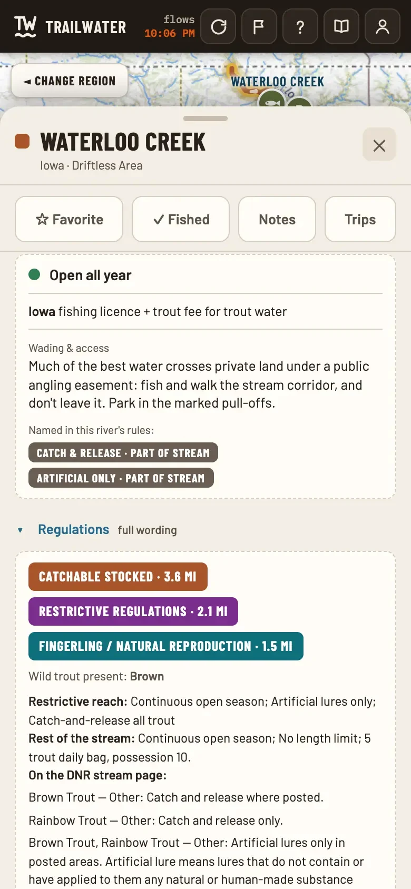
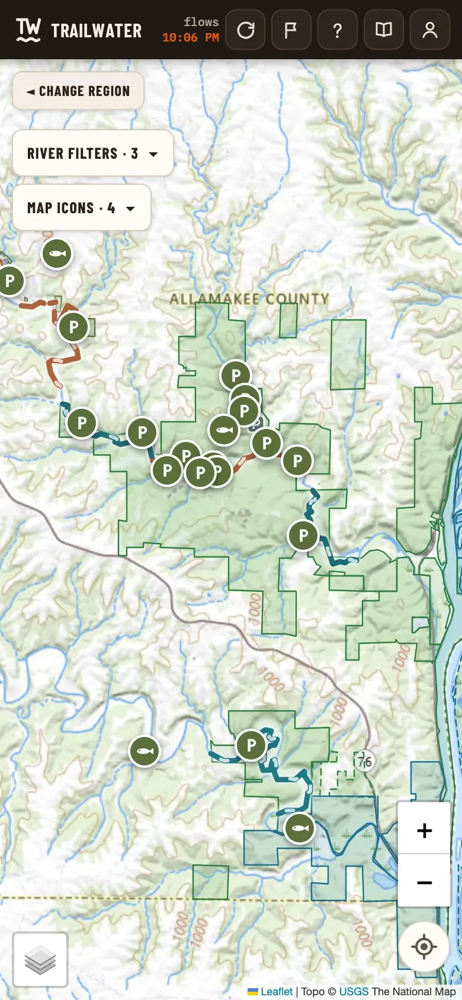
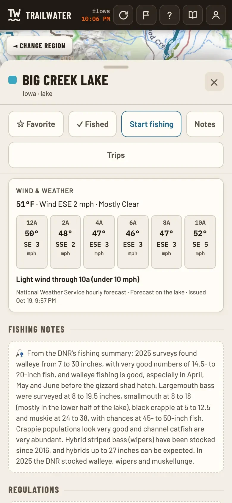
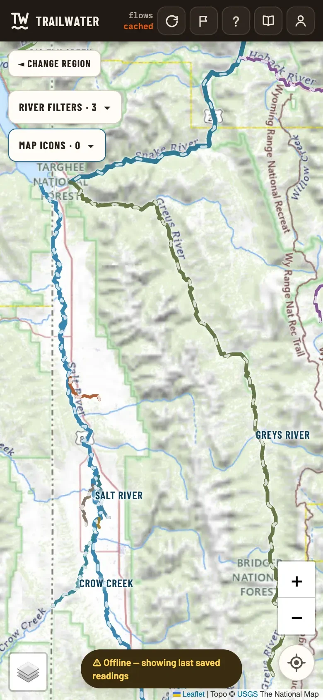

Find the water worth the drive.
1 / 17
Live flows, the rules, weather and where to get on, for 1,400+ trout and float rivers. All on your phone.
Open the map
Add an r. Add a trail.
Latest from TrailWater
All news →In the app
Everything on one thumb-sized screen





- 1,400+
- Rivers & creeks
- 18
- States
- 28
- National parks
- 800+
- Live gauges
About
Built by an angler, for the water you actually fish.
The name
A tailwater is the stretch of river below a dam: cold, steady, and some of the best trout water there is. TrailWater is the other kind. It is the water you walk to, wade, drift and float, and play on. The trail is where we come in. We help you find your water, navigate to it, and get on it.